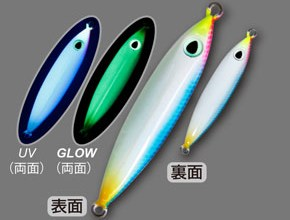
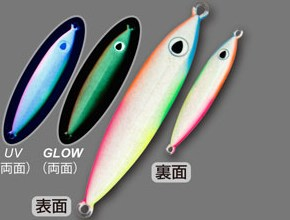
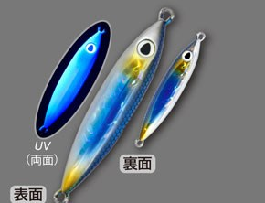
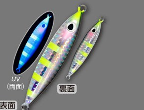

投次郎
投次郎はCultiva（カルティバ／オーナーばり）のライトショアジギング用メタルジグです。
撃投DNAを受け継いだ、超コンパクトなライトショアジギング用ジグです。読み方は「なげじろう」。
同じ重さの投技ジグよりもぐっと短いシルエットで、ベイトが小さい時に効果を発揮します。ジャーク時の動きをあえて抑え、水平フォールで食わせる設計。ハリ先の鋭い「投技フック」が標準装備です。

画像出典:オーナーばり公式HP
スペック
- メーカー
- Cultiva（カルティバ／オーナーばり）
- タイプ
- コンパクトメタルジグ
- 重さ／全長
- 20g／60mm、30g／68mm、40g／75mm、50g／80mm
- フック
- 投技フック 早掛シングル（#2：20・30g／#1：40g／#1/0：50g）
- ターゲット
- 青物・サゴシ・根魚・ヒラメなど
- 価格
- 880円（20g）／950円（30g）／1,000円（40g）／1,050円（50g）（税別）
▼今すぐチェック

投次郎の特徴
小さいベイトに合わせる、水平フォールのコンパクトジグ
-
超コンパクトフォルム
同じ重さの投技ジグよりもぐっと短く、ベイトフィッシュが小さい時に効果歴然。30gで68mmと、小さなシルエットでも遠くへ飛ばせる。
-
過剰なアクションを抑えた設計
ジャーク時の動きをあえて抑えて、スレに強くした。釣り人が多く並ぶ堤防でも、見切られにくくバイトを拾える。
-
水平フォールと投技フック
減速からフォールまで常に水平に沈み、浮遊時間を稼いで「食わせ」のタイミングを作る。じゃれつくようなバイトでもフッキングする、鋭い投技フックが標準装備。
投次郎の使い方
基本はキャストして着底させ、ワンピッチジャークやただ巻きで誘い上げ、止めて水平フォールで食わせます。
アクションが控えめなので、大きくシャクるよりも、軽めのジャークとフォールをリズムよく繰り返すのがコツ。フォール中のアタリに集中しましょう。
投次郎の得意な状況
イワシやキビナゴなど、ベイトが小さい時のライトショアジギングが得意です。
堤防からの青物・サゴシのほか、底付近で根魚やヒラメを狙う時にも使えます。人が多くてスレている時にも頼れます。
ワンポイント
20・30gは堤防、40・50gは潮の速い場所や飛距離が欲しい時が目安。フックは付属の投技フックで十分ですが、根魚狙いで根掛かりが多い場所では、フロントだけにするなど工夫しましょう。
投次郎のサイズの使い分け
| 重さ | 全長 | フック | 価格（税別） |
|---|---|---|---|
| 20g | 60mm | 投技フック#2 | 880円 |
| 30g | 68mm | 投技フック#2 | 950円 |
| 40g | 75mm | 投技フック#1 | 1,000円 |
| 50g | 80mm | 投技フック#1/0 | 1,050円 |
※数値は公式ページより。
オススメカラー
投次郎は30色近いカラーがあります。そのうち、特濃ケイムラ・グローを使った新色4色を紹介します（画像は公式より）。

61 ピンクいわしグロー定番のブルピンを、特濃ケイムラグローボディのヘッドだけに配したカラー。迷ったらこれ。

62 サンセットグロー反対色をエッジに並べ、全体フルラメのキラメキと発光を組み合わせたカラー。朝夕マズメに。

63 忍ブラックほど強くないリアル感のあるコントラストカラー。青物のほか、サクラマスにも。

64 稚魚イエローとブラックの輪郭で、濁り潮でも見つけてもらいやすいカラー。
画像出典:オーナーばり公式HP
投次郎に似ているルアー
-
 ジグパラショート
メジャークラフト
詳細はこちら＞
ジグパラショート
メジャークラフト
詳細はこちら＞
ショートシルエットの定番ショアジギングジグ。
-
 シーライド
ブルーブルー
詳細はこちら＞
シーライド
ブルーブルー
詳細はこちら＞
ライトショアジギングで人気のメタルジグ。
-
 フォルテン
ブルーブルー
詳細はこちら＞
フォルテン
ブルーブルー
詳細はこちら＞
フォールで見せるライトショアジギング用ジグ。